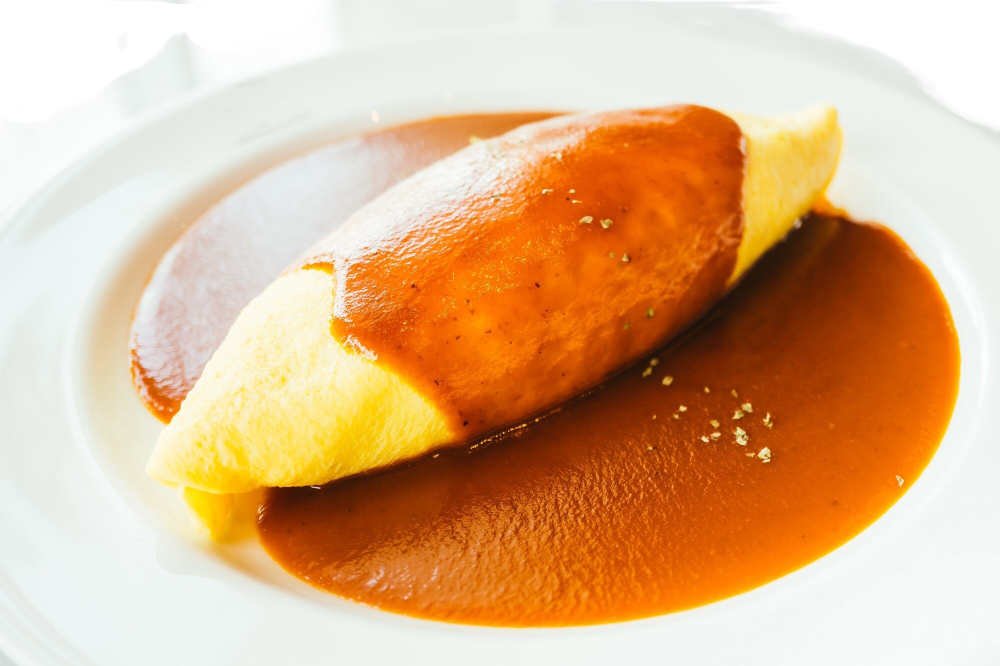

Omurice

What is Omurice?
Omurice is a quintessential family staple, loved as a comforting and nostalgic home-cooked meal.
It consists of seasoned fried rice, that's typically cooked with chicken, vegetables, and ketchup. It's then topped with a soft, fluffy omelette that gently blankets the rice.
Ingredients
For the Chicken Rice
- 1 Tbsp Unsalted Butter
- Rice
- 150g Boneless Chicken Thighs, cut into 1.5cm strips
- 100g Onion, diced
- 1 Tbsp Green Peas
- 5 Tbsp Ketchup
- 1 Tsp Worcestershire Sauce
- Pinch of Salt
- Ground Black Pepper
For the Omlette
- 4 Large Eggs
- Salt
- 2 Tbsp Unsalted Butter
Steps
Make the Chicken Rice
- Heat the butter in a large frying pan over medium heat and add the onion. Saute until the onions are translucent and tender.
- Add the chicken, season with salt and ground pepper. Cook until the chicken is no longer pink, about 3-5 minutes.
- Reduce the heat slightly, then add the ketchup and worcestershire sauce. Stir to mix and until the excess liquid has evaporated.
- Add in the rice and break apart the rice using a spatula. Season with salt and pepper.
- Toss in the green peas and stir until incorporated evenly.
- Divide the rice mixure into 3 portions. You can use two portions now and freeze the rest for another meal.
Make the Omurice
- Make one omurice at a time. Crack 2 eggs into a small bowl and beat the eggs with chopsticks in a zigzag motion.
Cut through the egg whites instead of whisking. - Add half of the salt and stir to combine. Strain the whipped eggs into a fine mesh strainer to remove the stringy egg whites.
- Prepare a damp cloth for cooling the pan later. Heat half of the butter into the pan over medium heat, making sure the entire surface is coated in butter.
- Once hot, pour in the egg mixture. Stir in the eggs quickly in a spiral motion with your chopsticks while shaking the pan.
Make sure to tilt the pan to spread the uncooked egg. The eggs should be nice and creamy. - Stop scrambling when the eggs are soft and half cooked.
- Place one portion of rice to one side of the omlette and turn off the heat. Flatten and reshape the rice slightly so its a football shape.
- Place the pan on the damp cloth to cool. Tilt the pan away from you and fold the near side of the omlette over the rice.
- Slide the omlette to the far edge of the pan and wrap the other side of the omlette over the rice.
- tilt the pan next to the omurice in the pan. Flip the pan over and transfer the omelette onto the plate
To Serve
- Mold the omurice into a football or rugby ball shape with a paper towel and your hands.
- Pour ketchup on top and serve.